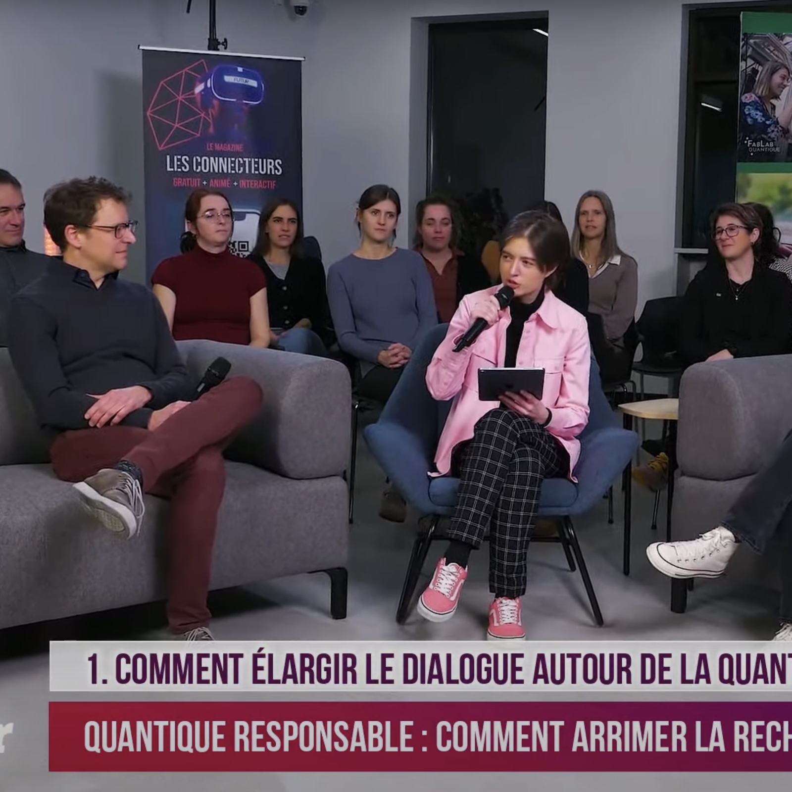
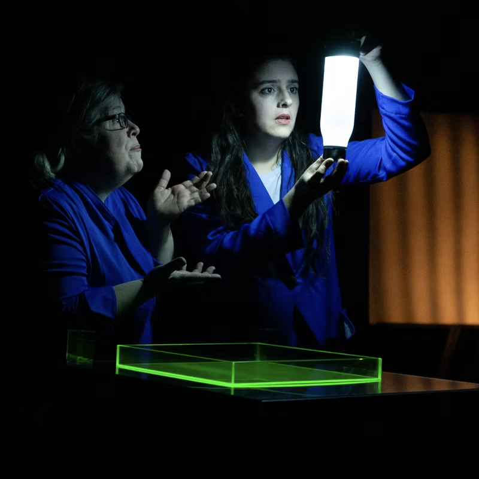

Rayonnement public
Vulgarisation, médias et événements


Pièce de théâtre : La rébellion du minuscule
Théâtre du Renard — Centre culturel UdeS (2025)

Capsule vidéo – Le projet Dialogues Quantiques
Institut Quantique — Maison du cinéma de Sherbrooke (2025)